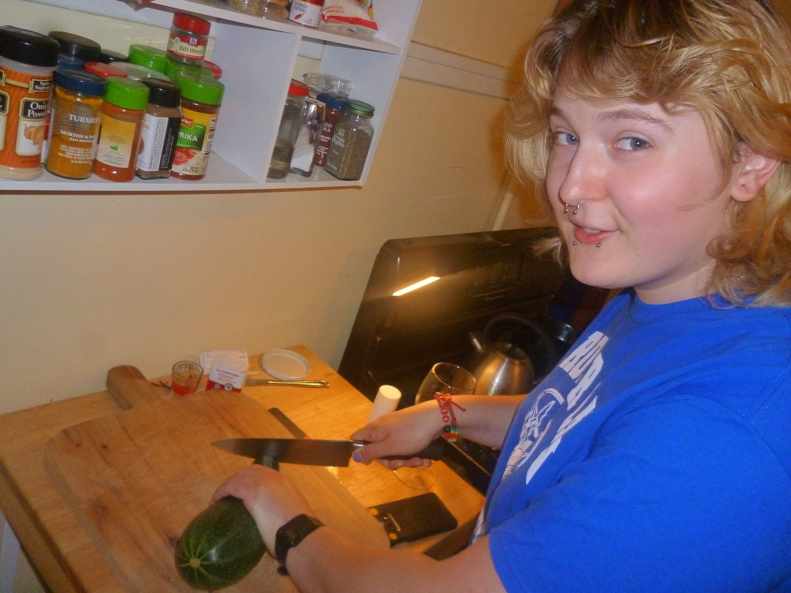
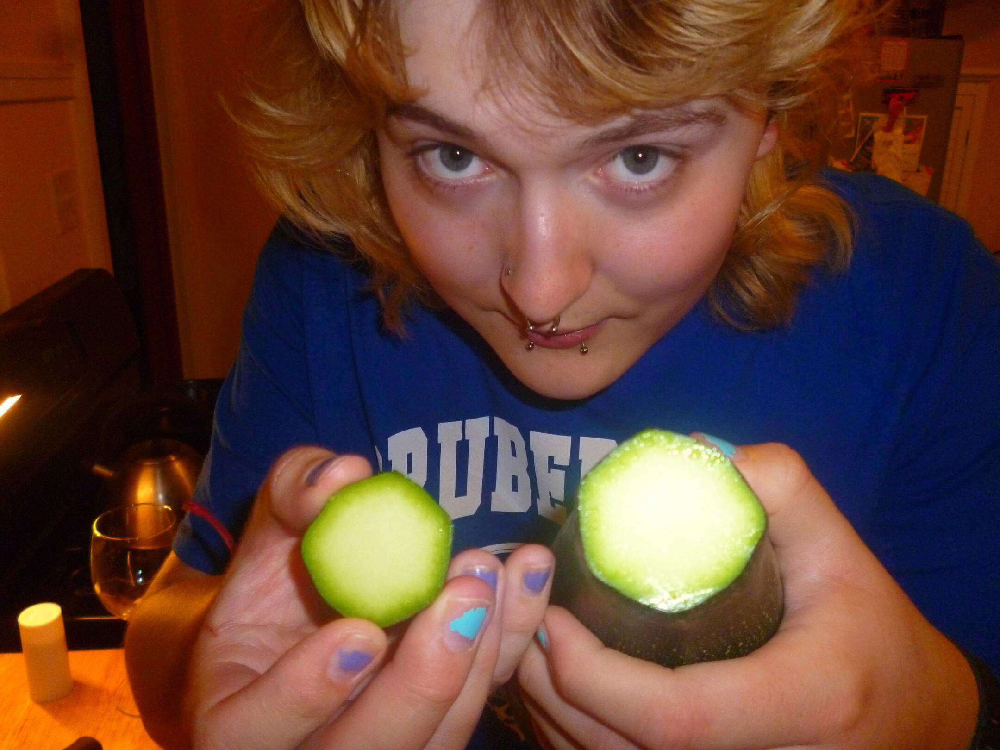
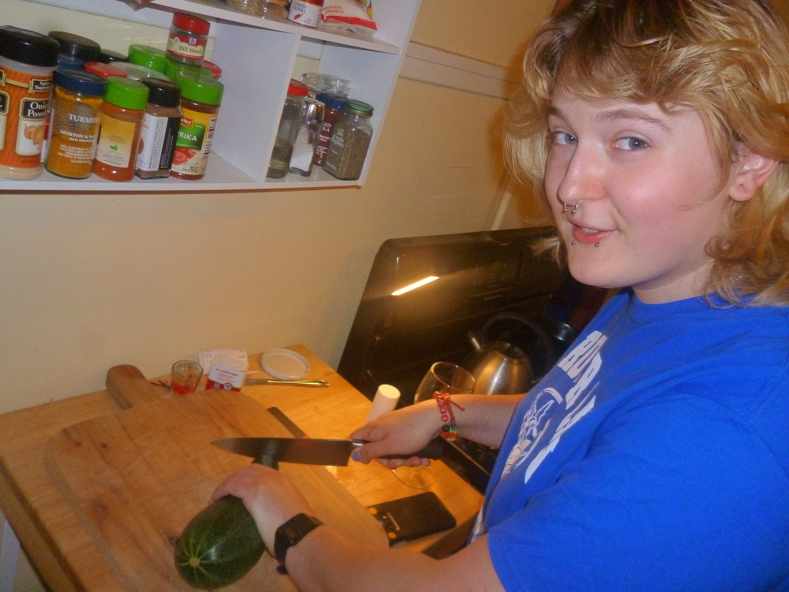
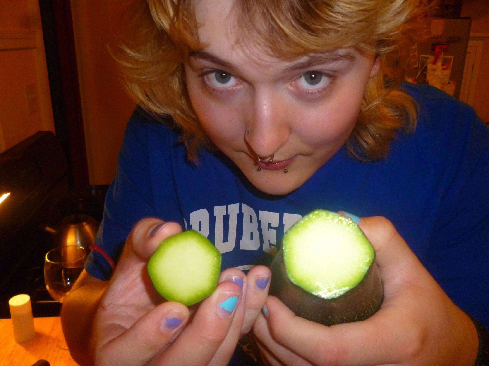
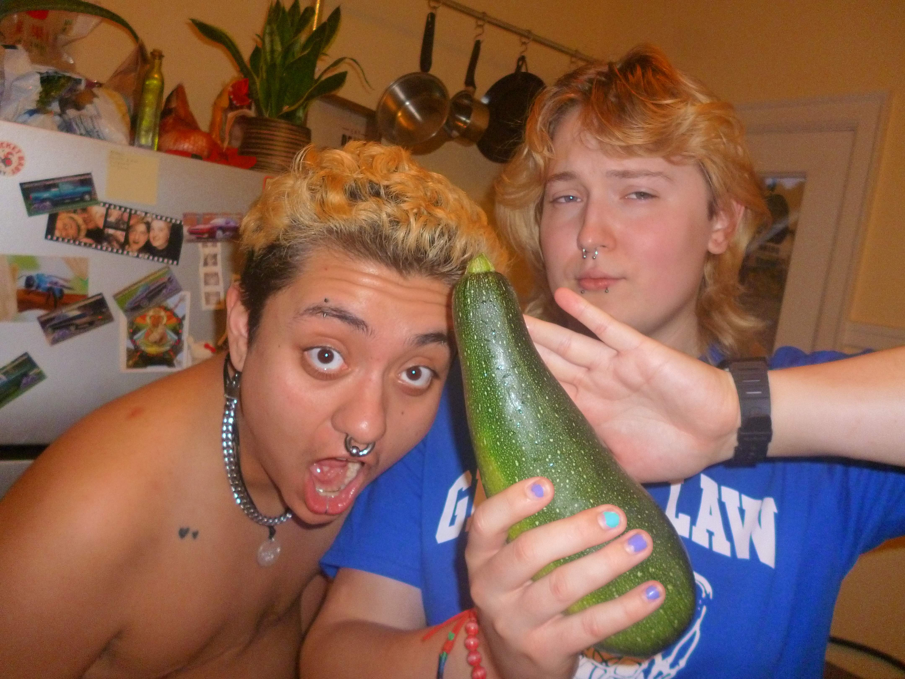
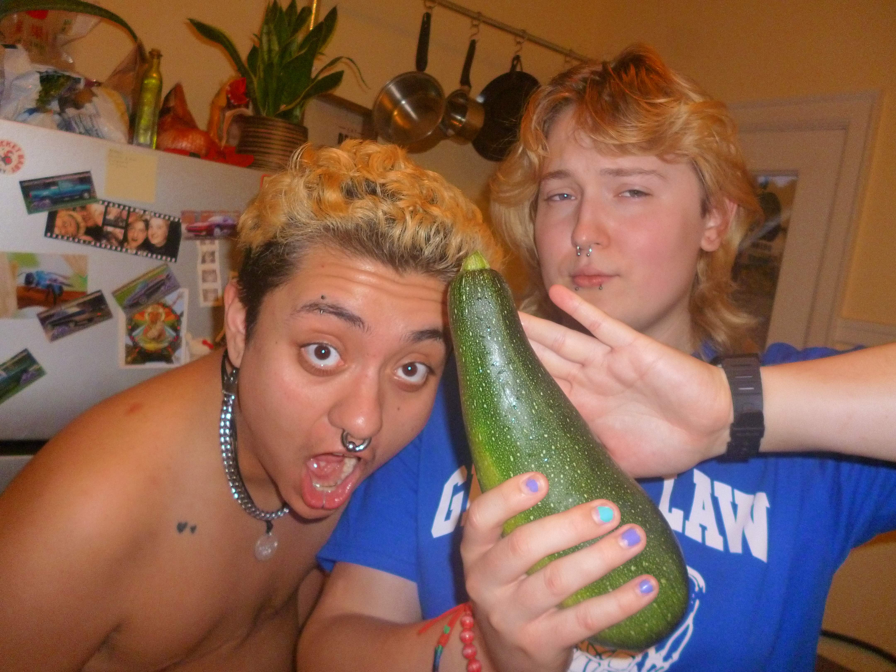
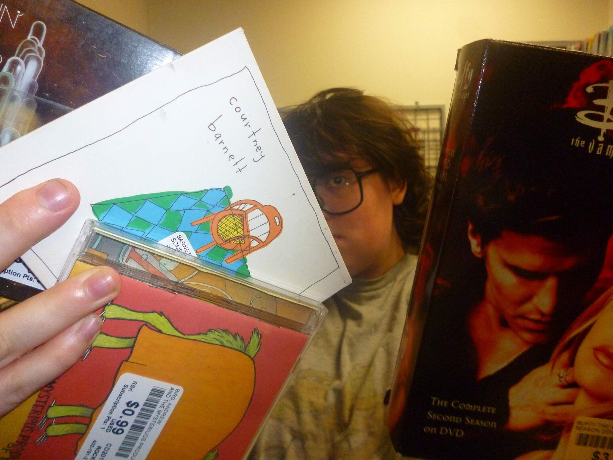
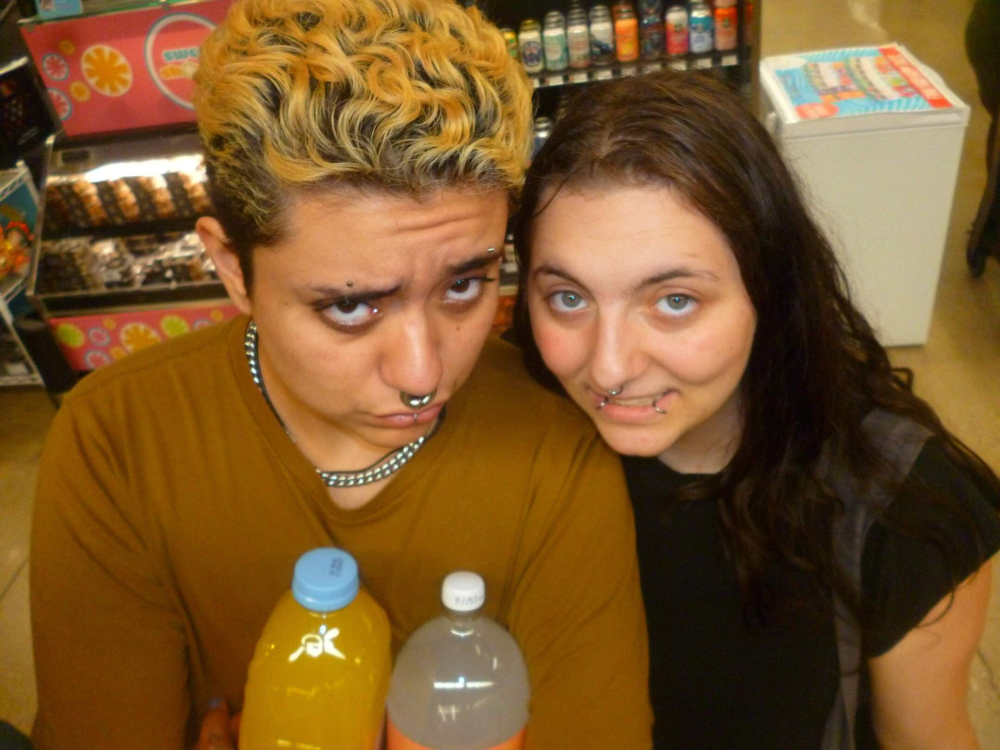
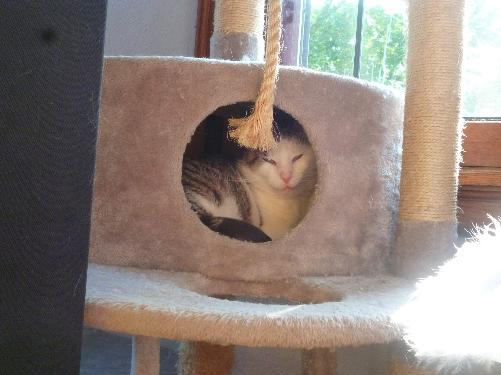
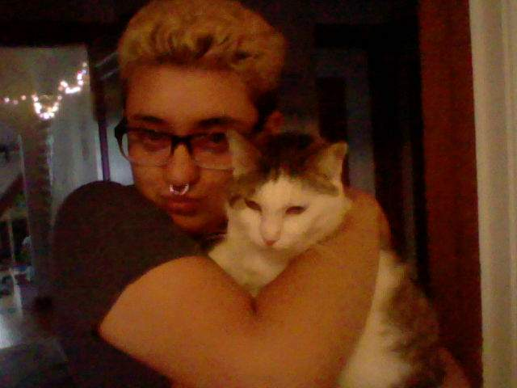

cooking some pasta sauce
July 25, 2024
 We made a super yummy pasta sauce with the zucchini and other vegetables.
July 25, 2024
 We made a super yummy pasta sauce with the zucchini and other vegetables.
July 25, 2024
 

We grew a pretty darn big zucchini in our garden this year. This is pretty much the only thing we actually got from our garden. We weren't able to use our backyard because of the brick that got fucked up by the builders.
July 25, 2024
We found some CDs and Buffy the Vampire Slayer at Mega Media Xchange.
July 25, 2024
Howl was in town for Badger's birthday and we needed some mixers for the alcohol!!
July 24, 2024
Herman isn't a super big fan of this little den thing on his cat tree, BUT sometimes he does go in there.
July 11, 2024
Aren't they both so darn cute!!!! David is better at holding Herman than I am.